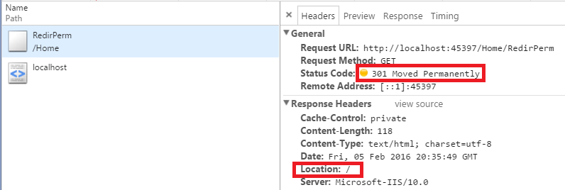

Redirect
I can never remember which method to return for an MVC redirect.
- Redirect
- RedirectPermanent
- RedirectToAction, RedirectToActionPermanent
- RedirectToRoute, RedirectToRoutePermanent
- Transfer, TransferRequest<
The main differences between the base and the *Permantent are the Redirect will return a 302 (found), while the RedirectPermanent will return a 301 (Moved Permantently)
Redirect
Returns a 302 (Found) to the given url


Redirect Permanent
Returns a 301 (Moved Permanently) to the given url

RedirectToAction, RedirectToActionPermanent
These work the same as the Redirect(Permanent) methods, but are formed MVC-ish in that you specify the action, controller, and model as you would using the @Url.Action helper method or @Html.ActionLink

RedirectToRoute, RedirectToRoutePermanent
These methods allow you to specify the route name (as specified in your RouteConfig.cs and stored in your RouteTable ) & values rather than the Action/Controller values.

Transfer, TransferRequest
These can be used to execute a different url and return the results
Transfer is used in < IIS7
TransferRequest is used in Integrated Pipeline Mode